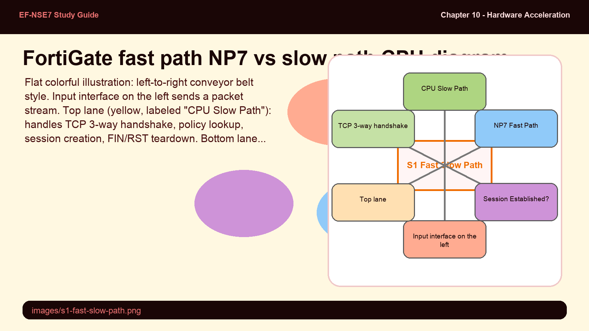
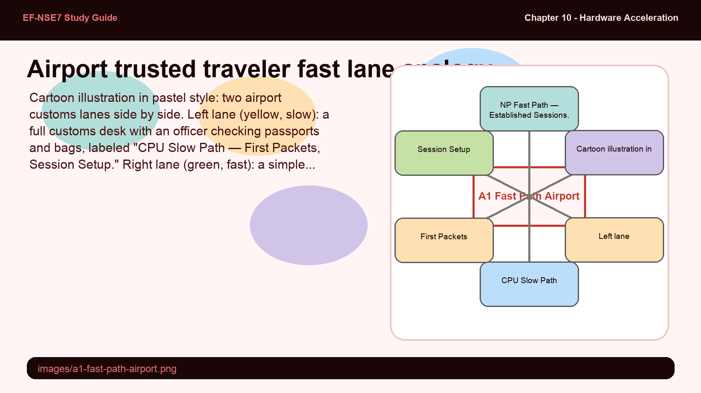
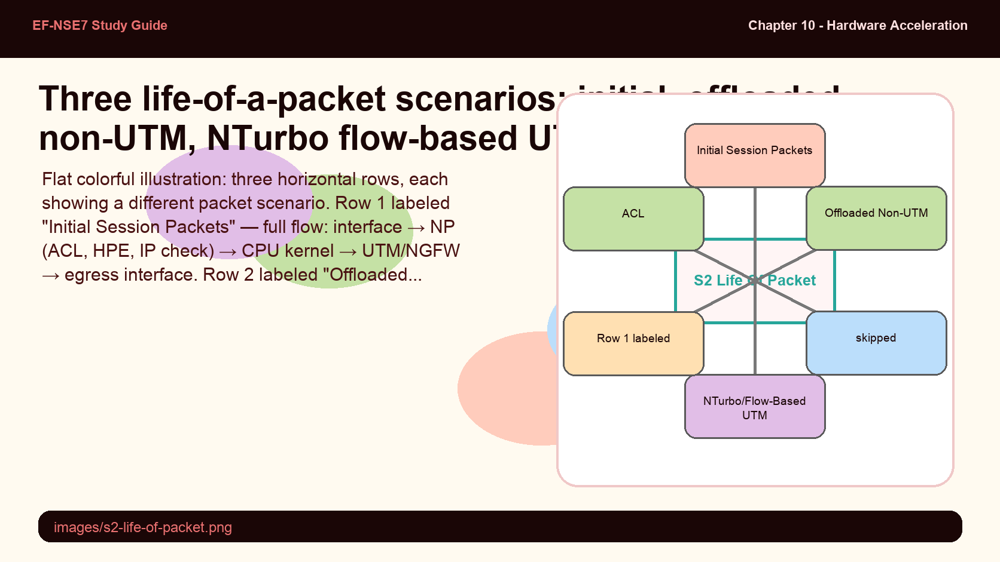
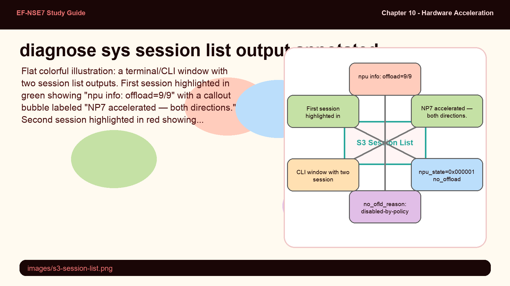
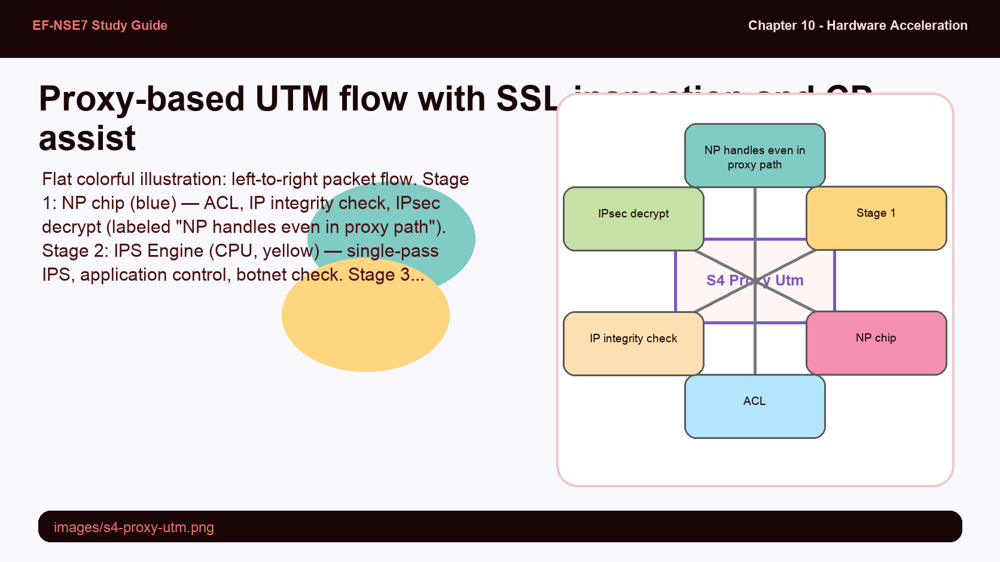

FortiGate uses the term "fast path" for NP-offloaded traffic and "slow path" for CPU-handled traffic. The terminology is relative — both paths deliver the same outcome (packet arrives at the destination), but the fast path does it without consuming CPU cycles. The critical insight is that the CPU always starts a session before the NP can take over.
- Why must the FortiGate CPU always process the first part of a session (TCP handshake or first UDP packet) even when NP offload is available? Why can't the NP start the session itself?
- What happens to FIN and RST packets in an offloaded TCP session — does the NP handle them, or does the CPU?
Fast Path vs. Slow Path — The Two Routes

CPU slow path (yellow) for session setup + teardown; NP7 fast path (green) for established session data packets.
FortiGate uses parallel path processing to route packets through different processing pipelines. The two fundamental paths are:
- Slow path (CPU path) — All packets that cannot be offloaded, plus session setup and teardown for all sessions regardless of acceleration
- Fast path (NP path) — Data packets in established sessions where all offload conditions are met; the NP forwards these without CPU involvement
The basic NP offload session flow follows these steps:
- The FortiGate CPU processes the first part of the session: for TCP — the full three-way handshake; for UDP — the first packet
- The CPU checks whether offload conditions are met (no proxy profiles, no session helpers, supported traffic type)
- If eligible, the CPU installs the session key into the NP processor's session table
- Subsequent data packets bypass the CPU entirely and are forwarded by the NP at hardware speed
- FIN and RST teardown packets always return to the CPU for session cleanup
The fast path/slow path is like customs at an airport — the first crossing requires a full inspection, but a trusted traveler program then lets you use the fast lane for future trips.
- First session packets (CPU) — Full customs check: identity verified, policy reviewed, biometrics registered, clearance given
- NP session key installation — Enrolling in the trusted traveler program (pre-clearance)
- Subsequent data packets (NP fast path) — Trusted traveler lane: scan badge, walk through — no full inspection every time
- FIN/RST (CPU) — Deregistering from the trusted traveler program when the traveler departs permanently

The "life of a packet" diagram in the study guide shows every processing stage a packet can traverse — from ACL and HPE at the NP, through kernel functions (routing, NAT, session management), through UTM/NGFW inspection, to egress. Not all stages are mandatory — which ones fire depends on the policy configuration, traffic type, and whether it's the first or subsequent packet of a session.
- Which three early checks are performed by the NP (before packets reach the kernel CPU) during the initial session setup, and why is performing these early beneficial?
- For an offloaded non-UTM session, which processing steps does the NP handle for subsequent packets, and which kernel steps does it skip entirely?
Life of a Packet — Three Scenarios

Three packet scenarios: initial session (full CPU path), offloaded non-UTM (NP bypass), NTurbo flow-based UTM (NP + IPS loop).
Understanding the full packet processing pipeline requires knowing three distinct scenarios based on traffic type and session state:
Scenario 1 — Initial Session Packets (all sessions, first packets)
Every session's first packets pass through the full processing pipeline. The NP handles early checks (ACL, HPE, IP integrity header check, IPsec VPN decryption). Then the kernel CPU handles: destination NAT, routing, RPF check, SD-WAN, stateful inspection/policy lookup, session management, session helpers, user authentication, device identification, SSL VPN, and local management traffic. Then optional UTM/NGFW: flow-based inspection (NP/CP assisted), proxy-based inspection (CPU/FortiOS proxy), and botnet checking. Finally egress: forwarding, source NAT, IPsec encryption, traffic shaping, WAN optimization.
Scenario 2 — Offloaded Non-UTM Sessions (subsequent packets, no security profiles)
After the session key is installed in the NP, subsequent packets for sessions without security profiles skip the CPU entirely. The NP handles: IP integrity header check, IPsec VPN decryption, IPsec VPN encryption, traffic shaping, and forwarding via the egress interface. The kernel routing, NAT, and all UTM stages are bypassed.
Scenario 3 — NTurbo/Flow-Based UTM Sessions (subsequent packets, flow-based profiles)
When flow-based security profiles are configured, the NP still handles session forwarding but UTM/NGFW inspection is still required. NTurbo bridges this: the NP sends packets to the IPS engine via the NTurbo driver. IPSA offloads IPS pattern matching to the CP. After inspection, packets return to the NP for egress forwarding. The kernel routing stages are still bypassed — only UTM inspection remains in the path.
The diagnose sys session list command is the primary tool for verifying hardware offload. The npu_info line within each session entry contains critical fields: the offload code tells you which NP is handling it, and if offload is disabled it shows the reason. Knowing how to read these fields is essential for troubleshooting performance problems.
- In the session list output, what does "offload=9/9" tell you, and what number would you expect to see for an NP6 offloaded session?
- When you see "no_offload_reason: disabled-by-policy" in the session list, what does that tell you about the firewall policy configuration?
Session List Diagnostics — Reading Offload Status

Session list output annotated: npu info line, offload=9/9 (NP7), and disabled-by-policy no_offload_reason.
The primary diagnostic command for verifying hardware offload is diagnose sys session list. Each session entry includes an npu_info line that contains the offload status.
# Show all sessions with NPU info
diagnose sys session list
# Example output for an NP7-offloaded session:
...
npu info: flag=0x81/0x91, offload=9/9, ips_offload=0/0, epid=128/166, ipid=166/128, vlan=0x0000/0x0000
...
# offload=9/9 → code 9 = NP7, both ingress and egress on NP7
# offload=7/7 → code 7 = NP6 (older hardware)
# offload=0/0 → not offloaded to NP
# Example output for a session blocked from offloading:
npu_state=0x000001 no_offload
no_ofld_reason: disabled-by-policy
# diagnose sys session list filter can narrow results:
diagnose sys session filter src 192.168.1.100
diagnose sys session list| offload Value | Meaning |
|---|---|
| 9/9 | NP7 handling both ingress and egress — fully hardware-accelerated |
| 7/7 | NP6 handling both directions — hardware-accelerated |
| 0/0 | No NP offload — session handled by CPU |
Common no_ofld_reason values and their meanings:
- disabled-by-policy — auto-asic-offload is set to disable in the firewall policy
- proxy-mode-policy — the policy uses a proxy-based security profile
- session-helper — the session requires a FortiOS session helper (e.g., SIP, FTP ALG)
- tunnel-mode — traffic is on a tunneled interface (SSL VPN, GRE)
Proxy-based UTM sessions are the most complex packet flow on FortiGate. The network processor still performs early security checks and can handle IPsec tunnel decryption, but once proxy inspection begins, the CPU takes full control — running the FortiOS proxy for DLP, web filtering, antivirus, and VoIP inspection. The CP can still assist with SSL decryption/encryption if SSL deep inspection is configured.
- In a proxy-based UTM session with SSL deep inspection, how many times is the SSL/TLS traffic decrypted and re-encrypted, and which component handles each operation?
- Why does the network processor still appear in the proxy-based UTM packet flow even though it cannot offload the session?
Proxy-Based UTM — Full CPU Path and CP Assist

Proxy-based UTM: NP handles early checks, CPU proxy handles inspection, CP handles SSL decrypt/re-encrypt for deep inspection.
When a proxy-based security profile is configured on a firewall policy, the session is always processed by the FortiGate CPU — but the processing pipeline is more complex than a simple CPU-only path. Several components collaborate:
The NP processor still handles early mandatory functions even for proxy-based sessions:
- Access Control List (ACL) enforcement
- IP integrity header checking
- IPsec VPN decryption (if traffic arrives via IPsec tunnel)
After the NP early checks, the IPS engine (CPU) handles single-pass IPS, application control, and botnet checking. The FortiOS proxy (CPU) then handles the full set of proxy-based inspection features:
- VoIP inspection
- Data loss prevention (DLP)
- Antispam
- Web filtering
- Antivirus scanning
If SSL deep inspection is also configured, the CP processor offloads the SSL/TLS decryption and re-encryption operations. The flow for SSL-inspected proxy traffic:
- IPS engine determines the session needs SSL decryption
- IPS engine sends the packet to the proxy
- Proxy decrypts SSL/TLS — offloaded to CP hardware
- Proxy sends decrypted packet to IPS engine for application control
- IPS sends decrypted packet back to proxy for proxy-based inspection
- Proxy re-encrypts SSL/TLS — offloaded to CP hardware
- NP handles IPsec encryption on egress if applicable